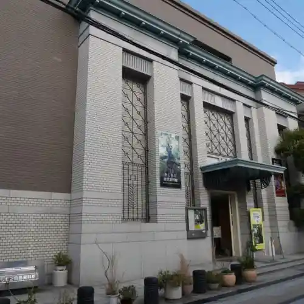
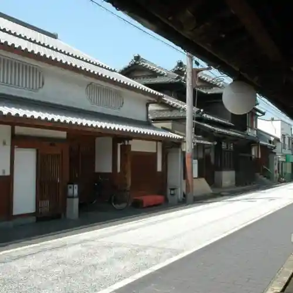
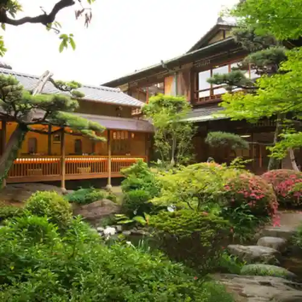
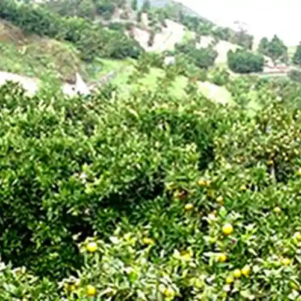

Kishiwada Shizen Museum
Kishiwada, Osaka · 072-423-8100 · Official / source link

Fugu Museum
Kishiwada, Osaka · 072-422-3929 · Official / source link
Machizukuri no Kan
Kishiwada, Osaka · 072-433-3511 · Official / source link

Gofu So
Kishiwada, Osaka · 072-438-1152 · Official / source link

Kita Saka Town Kanko Nojo
Kishiwada, Osaka · 072-428-5300 · Official / source link

Nankai Nami Setsu Horu (Kishiwada Tatsunami Setsu Horu)
Kishiwada, Osaka · 072-439-4173 · Official / source link
Tensei Tera (Tako Jizo)
Kishiwada, Osaka · 072-422-0773 · Official / source link
Kishiwada Danjiri Hall
Kishiwada, Osaka · 072-436-0914 · Official / source link
Kishiwada Kankambeisaidomoru
Kishiwada, Osaka · 072-436-9955 · Official / source link
Kishiwada Shiro
Kishiwada, Osaka · 072-431-3251 · Official / source link
Kishiwada Tourist Farm
Kishiwada, Osaka · 072-479-2256 · Official / source link
Kishiwada Ekimae Tourist Information
Kishiwada, Osaka · 072-493-2468 · Official / source link
Kishi Shiro Shrine
Kishiwada, Osaka · 0724-22-0686 · Official / source link
Senko Tera
Kishiwada, Osaka · 072-427-5610 · Official / source link
Seki Kawa Shrine
Kishiwada, Osaka · 072-479-0134 · Official / source link
Tombo Ike Park
Kishiwada, Osaka · 072-443-9671 · Official / source link